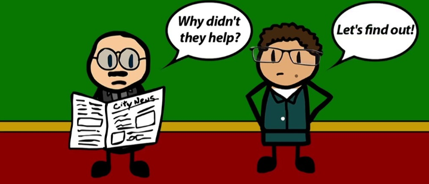

The volunteer’s dilemma game models a classic situation that each player in the game can choose either to sacrifice himself for the public good or to wait for the others in the game to sacrifice themselves in order to reach the same target. Different from Samaritan’s Dilemma in which players’ actions may lead to the laziness of other players and involves concepts like asymmetric information, each player in volunteer’s dilemma does not know what action the others exactly take and wait in hope of benefiting from others’ efforts. For example, electricity supply of an independent house has failed, thus at least one family member must go to fix it or otherwise everyone in the house will suffer from the consequences.
This report is for game theory and get the nash equilibrium! Therefore, payoff-matrix and other game theory's concepts are introduced to explain the situation.
For the details, please contact David Cheung to get more exciting insights!
cheungyuk123@gmail.com
Back To the Main Page